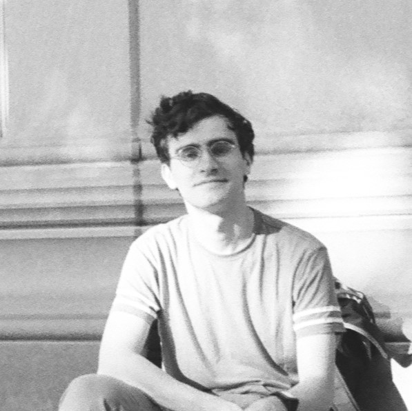

About Me
In my free time I enjoy learning languages, board games, making, and a bit of photography. I have an Erdös Number of 4. As of January 2023, I am a member of the Luxuriant Flowing Hair Club for Scientists!

A photograph of myself taken with my Olympus OMG 35mm SLR film camera on black-and-white ISO 400 film.
Topics or written works I like
Academically-oriented works I like
Note: I did not write these works!- CV of Failures by Johannes Haushofer. Insightful reflection on what success looks like and means in academia, and how something like a CV can narrow our undersanding of success and failure.
- قلب (transliterated "alb"), a programming language with Arabic-based syntax
- Professor Jon E. Froehlich's homepage, where he has a lab handbook featuring insight into his advice and experience as a professor and mentor. USA and institute-specific information, but helps me gain breadth understanding of being an academic.
- Professor Vijay Chidambaram's book specifically for new (CS) professors, discussing challenges and intricacies of the job. As someone potentially interested in becoming a professor, this is information and insight I had not yet seen before reading.
Games that I like
- netgames.io (online games; my favorite is Love Letter)
- Colonist.io (online Settlers of Catan)
- puzzgrid (grid puzzles like what are found on the BBC Two show Only Connect)
- Sporcle (online quizzes)
1 I am a TIFfer (Tea in First).